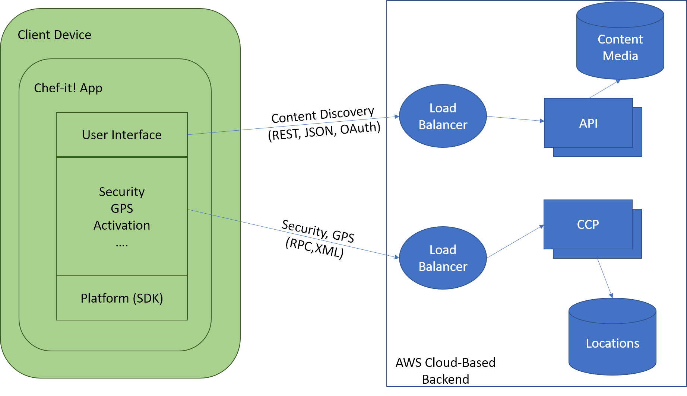
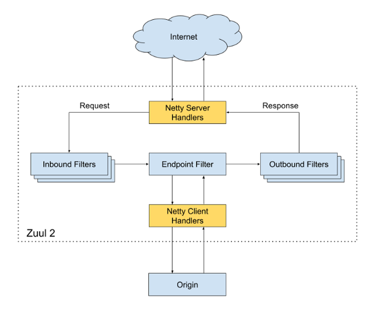
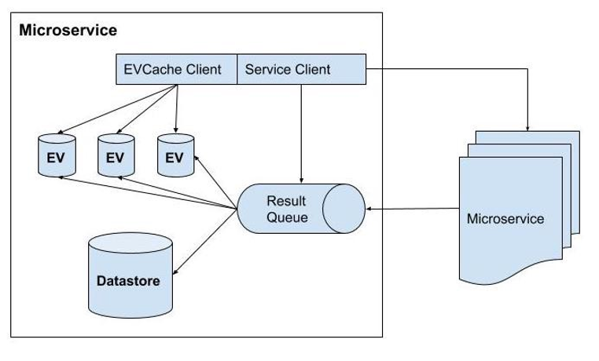
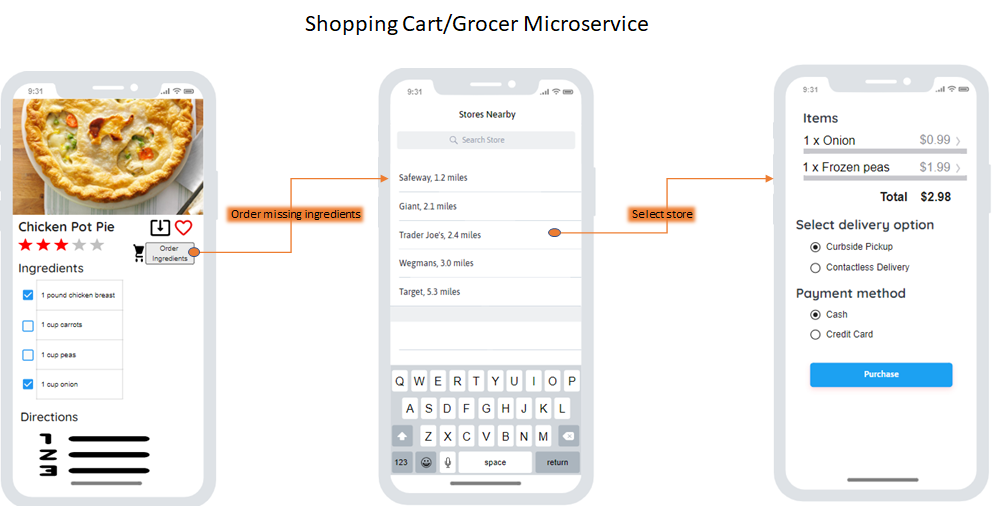

Background
The year 2020 has seen restaurants, gathering spaces, sporting events, and more close down indefinitely due to the ongoing COVID-19 pandemic. This has caused people to flock to grocery stores in efforts to secure ingredients to keep their families fed. Many people would like to cook, but don’t know how. Some have ingredients, but have no idea how to make them into a satisfying meal. Still others may be uncomfortable going out to get groceries amidst the pandemic and more comfortable ordering their meals over the internet. Our product “Chef It!” seeks to resolve these problems and more by providing a platform for experts and newbies alike to share recipes complete with ingredient lists, helpful instructions, ratings, and reviews. Chef It! also allows users to stream video tutorials to assist beginner cooks.
For this product, the customer will be our users. Our platform will not target any one group of people, but instead appeal to all ages, cultural backgrounds, and geographies. The benefit we see to choosing this method is that we will invite the widest array of cuisine if we can attract the most diverse user-base. The key to making this diversity target feasible is to make the application simple to navigate and provide a user experience that maintains a high customer retention rate.
Use Cases
Alex is a 20 year old student who lives on a college campus. Alex has up to this point, been going to the school cafeteria and restaurants to eat. Unfortunately, due to COVID19, Alex would like to prepare his own food to reduce the risk of contracting the pandemic. Alex would like to learn beginner friendly recipes and keep a list of favorite recipes he liked. Finally, Alex would like to rate the recipe that he cooked.
Laura is a 38 year old mother with two children. She would often prepare meals for her children by looking up recipes and buying ingredients at the grocery store. Due to the pandemic, Laura would like to reduce the amount of time at the grocery store, use a recipe app to look for meals that can feed a family, use a recipe app to order ingredients she is missing from a recipe, and read user feedback on the recipes.
Requirements List
To get started with our design, we are tasked with generating a requirements list of desired behaviors and critical non-functional requirements. From the rough outline of features in the preceding section, we are able to generate a functional requirements list shown below in Table B-1:
| Identifier | Requirement/Description |
|---|---|
| FR-1 | Application must allow users to generate unique user profiles |
| FR-2 | Application must retain recipes within the datastores |
| FR-3 | Application must call recipes and present to the user when requested |
| FR-4 | Application must allow filtering of recipes based upon pre-defined criteria |
| FR-5 | Application must store and build internal associations for video recipes |
| FR-6 | Application must allow for and retain user feedback on recipes |
| FR-7 | Application must allow for each recipe to be user rated and retain that rating |
| FR-8 | Application must be available for iOS (API 13+) and Android (API 23+) |
| FR-9 | Application must implement a service that allows for in-app payment |
| FR-10 | Application must implement location services microservice for grocer locating |
| FR-11 | Application must implement a shopping cart microservice that links to local grocers |
| FR-12 | Application must allow users to search recipes for keywords |
| FR-13 | Application must be accessible by commonly used internet browsers |
Table B-1. Functional requirements for the Chef It! application.
While these features define the basic behavior of the application, they do not paint the entire picture of the system. The non-functional requirements below in Table B-2 will define the targeted user experience of the application.
| Identifier | Requirement/Description |
|---|---|
| NFR-1 | Application must retain user information in a secure fashion |
| NFR-2 | Application must have high availability (>99.999%) |
| NFR-3 | Application must be able to support a high number of connections |
| NFR-4 | Application must be able to reliably transport customer data |
| NFR-5 | Application must have low latency even under heavy load |
| NFR-6 | Application must be computationally efficient |
| NFR-7 | Application must be easy to navigate for non-tech users |
Table B-2. Non-Functional requirements for the Chef It! application.
These requirements will be referenced by their identifier when necessary to further provide implementation detail.
Table B-3 (below) contains a list of the critical design choices in our application. Each design component is given a unique identifier and description.
| Design Component Identifier | Component | Description |
|---|---|---|
| DC-1 | Content Discovery | Process of interfacing between Client and Backend to retrieve and display information and return information to the Backend |
| DC-2 | Load Balancer | Cloud service to route traffic for reliability and efficiency |
| DC-3 | Chef-It! Control Plane | Provides client location data and manages digital interfaces with grocers |
| DC-4 | Datastores | Distributed database to house application information |
| DC-5 | Business Logic Microservices | Loosely coupled subprocesses that perform operational tasks |
| DC-6 | API Gateway Service | API management system that resides between the Client and Backend |
| DC-7 | Application API | A collection of APIs that handle common application tasks |
| DC-8 | Computing Instances | Cloud-sourced distributed processing power |
| DC-9 | Processing Pipeline (Event-Driven Architecture) | Data acquisition and refinement process needed to sustain microservices |
Table B-3. Design Component Matrix describing the components of our high-level design.
The Traceability Matrix below, in Table B-4, relates the Chef-It! functional and non-functional requirements to the design component that enables us to achieve said requirement. Some requirements are not explicity addressed by our primary design components, but are important to include in the lower level design process. These instances are given a "Design ID" of "Sys Req"
| Requirement Type | Requirement ID | Design ID(s) |
|---|---|---|
| Functional | FR-1 | DC-1, 3, 5, 7, 9 |
| Functional | FR-2 | DC-4 |
| Functional | FR-3 | DC-1, 4, 5, 6, 7 |
| Functional | FR-4 | DC-1, 5, 7 |
| Functional | FR-5 | DC-4, 9 |
| Functional | FR-6 | DC-4, 5, 6, 7 |
| Functional | FR-7 | DC-1, 5, 6, 7 |
| Functional | FR-8 | Sys Req |
| Functional | FR-8 | Sys Req |
| Functional | FR-9 | DC-5, 6, 7 |
| Functional | FR-10 | DC-3, 4, 5 |
| Functional | FR-11 | DC-1, 3, 5 |
| Functional | FR-12 | DC-1, 4, 7 |
| Functional | FR-13 | Sys Req |
| Non-Functional | NFR-1 | DC-1, 5, 6, 7 |
| Non-Functional | NFR-2 | DC-5, 8, 9 |
| Non-Functional | NFR-3 | DC-2 |
| Non-Functional | NFR-4 | DC-4, 5 |
| Non-Functional | NFR-5 | DC-2, 6, 7, 8, 9 |
| Non-Functional | NFR-6 | DC-6 |
| Non-Functional | NFR-7 | Sys Req |
Table B-4. Traceability Matrix describing the relationships between requirements and components in our high-level design. “Sys Req” refers to defined system requirements that are needed regardless of components.
Backend Architecture
Our application will utilize the basic components of a web application. Chef-It! will operate based on Amazon Web Services (AWS). The software architecture of Chef-It! will consist of two main parts: Client and Backend.
Client
Overview
The Client is any device running the application. These devices will include, at minimum, supported browsers running on a computer (laptop or desktop) or the Chef-It! App on smartphones or tablets. The team at Chef-It! will develop their own iOS and Android apps. In doing so, the team at Chef-It! will be able to control the app and other devices through the SDK for the following reasons:
- Will allow us to utilize efficiencies on each operation system to provide a better experience for every user on every client and device
- Provide the capability to adapt services smoothly and transparently under various circumstances
Components
Chef-It! has requirements to be responsive, fast, and highly available. Chef-It! will control its performance via the software development kit (SDK). Figure C-1 illustrates a typical client structure.
Figure C-1. Example of system path/logic per client connection type.
Client Apps will separate connections to the backend into 2 categories: content discovery and grocery tracking. The content discovery will provide data to display on the UI including recipes, user information, ingredients, and videos. The grocery tracking will utilize built-in GPS on most smartphones and geo-location services on other clients to provide constant polling to the Chef-It! Control Plane (CCP) to constantly update a user’s location to find grocery stores nearby, access their APIs, and find deals/pickup services.
Backend
The backend of our system comprises almost everything including services, databases, and storages and will run entirely on AWS cloud. Some components of the Backend include:
- Databases: Chef-It! will primarily use scalable distributed databases such as Cassandra and/or AWS DynamoDB.
- Business logic Microservices: Various frameworks created by Chef-It! developers.
- Computing Instances: utilize AWS EC2 which can be easily scaled to meet future demand.
Architecture

Figure BA-1. The Chef-It! Backend Architecture.
- The client sends a request to the Backend. Since the Backend is running on AWS the request is handled by an AWS Load Balancer (AWS Ext.LB).
- The AWS Ext. LB will forward the request to the API Gateway Service running on EC2 instances. The API Gateway Service is named “Edge” and is built by the Chef-It Team to allow dynamic routing, traffic monitoring and security, and increase resilience to failures. The Edge component will take the request and apply it to predefined filters corresponding to business logics and then forward the request to the Application API for further handling.
- The Application API component contains the core business logic behind the chef-it application. All of the APIs are contained within this module and include several different types of APIs, each corresponding to different user activities/capabilities. Some examples include the Signup API, where users can register, or a Recommendation API for retrieving recipe recommendations.
- The API will call a microservice (or sequences of microservices) to fulfill the request. An example would be the Signup API. Which would call a microservice to obtain, validate, and compare data in the request with data from the datastores. Then it would utilize another microservice to send a verification email or text message to the user at the appropriate email or phone number.
- Microservices are the backbone of the backend architecture, and are small stateless programs that fulfill incoming requests through an API. Due to the complexity of the system, Chef-It! will utilize the open source software called Hystrix (by Netflix) to isolate each microservice from the caller process. This will allow us to control cascading failures and enable resilience. After each run, Hystrix will cache its result to allow faster access for specific critical requests.
- Microservices can utilize the datastores and cache to save or obtain data during its process.
- Microservice can utilize the Processing Pipeline for real time processing or batch processing.
API Gateway Service
Chef-It! will design the API Gateway service while utilizing Netflix’s open source Zuul [5] implementation. Zuul’s software was chosen primarily for its resiliency and scalability capabilities. If there is a need to increase service availability, this component can easily be deployed to EC2 instances across different regions.The API Gateway service resolves all requests from clients by communicating with the AWS External Load Balancers.
Figure BA-2. Overview of Zuul: The API Gateway Service.
Initially, the request gets routed to the Netty Server Handlers which are responsible for handling the network protocol, web server, and proxying work. This abstraction leaves the majority of heavy lift to the filters. The request is sent to the inbound filters which can be used for authentication, routing and manipulating the request. Next, the request is sent to an endpoint filter which can return a static response or route the request to the appropriate Application API in the backend. Lastly, before a response is sent, it gets decorated by the Outbound filters which also track metrics such as error rates, return codes, etc. These metrics will be monitored by the Chef-It! Team for continuous improvement and anomaly detection. Zuul is also able to discover new Application API by integrating with our service discovery module. This will allow for onboarding new application APIs, load tests, and service rerouting seamlessly, without impact to uptime or customers.
Application API
The application API is directly tied to Chef-It!’s core business functionalities. It serves as the orchestration layer to the other microservices. The API will follow the RESTful API [6] format to increase compatibility and reusability, as it is the architectural standard for web-based applications. The API proves the logic of converting a request to a composition of calls to the underlying microservices in correct order. While conducting these calls, the Application API can obtain additional data from other data stores to construct the appropriate responses. Chef-It!’s Application API is comprised of 8 categories:
- Signup API-provides functionality for non-members such as sign-up, trials, billing, etc.
- Login API- provides functionality for members such as user authorization such as login, account information
- Discovery API- used for searching recipes
- Grocery API- used for shopping for ingredients at local grocery stores
- Play API- for video streaming of recipe tutorials
- Feedback API- provides ability to users to provide feedback for recipes in the form of comments/posts and rating values.
- Payment API- provides functionality for all transactions.
- Ingredients API - provides the ability for users to select ingredients from recipes that they own and/or might need
The Application API component must be able to accept and process large columns of requests and construct appropriate responses. Our Architecture will utilize concepts from both synchronous and asynchronous execution calls.

Figure BA-3. Execution methodology to handle large volumes of requests.
The input and outputs (I/O) will be asynchronous, with the inputs being the requests from the API gateway Service. Each request will then get placed into the Network event loop for processing. Rather than having independents threads (async execution), we will utilize a synchronous exception call stack and thread handler to block each request to run certain commands such as getDeviceInfo, get Customer Info, etc. before going to a non blocking output known as the Outgoing Event Loop. This loop will call the appropriate microservices and once complete, the dedicated thread would construct the corresponding response.
Mircroservices
Figure BA-4. Overview of Microservice Implementation
A microservice can function as an independent module or can call other microservices via REST. Figure BA-4, illustrates the structural component of a microservice. The implementation of the microservices can utilize the Network event loop to obtain requests and results from other microservices. While each microservice can utilize its own datastore, it can store recent and/or heavily used queries or results into an in-memory cache.
Figure BA-5. UI/UX of grocer microservice
Processing Pipeline
The processing pipeline is an essential piece of infrastructure that enables data driven engineering. The pipeline utilizes Kafka, a cluster messaging service, as its backbone. It is responsible for producing, collection, processing, aggregating and moving all microservice events in almost real-time. As Kafka utilizes a clustered event-driven architecture, combined with AWS cloud features, it is able to automatically scale as the number of users increases. Figure BA-6 Below illustrates the general architecture of the processing pipeline.

Figure BA-6. Event-Driven Architecture of Processing Pipeline
Events are produced by the microservices through API calls to the Kafka cluster. Based on the topic of the event, the router module (within Kafka) routes the message/request to different databases or applications such as elastic search or S3.The Kafka Consumer can take a message as an input and run different tasks including the decorating and routing of requests to the stream processing as a service platform. SPaaS will allow engineers to build and monitor their custom managed application while the platform can take care of scalability and operations.
Design Rationale
The most succinct way to rationalize our chosen high-level design architecture is to examine them from within the context of our functional and non-functional requirements. The following section will seek to outline our high level design choices, the requirements that necessitated these choices, and how the choices fulfilled the requirements.
From the highest level, our task was to create a recipe-hosting web application that was tailored to a host of design and software quality metrics. Zooming in, we have a client-server architecture that uses cloud computing and microservices to handle computational heavy lifting. This event-driven architecture is supported by a host of cloud services to support the Backend. This is the framework which we will dissect to conduct our design rationale. This rationale will be divided into Client and Backend sections to assist with identifying division of responsibility.
Client
Client requirements (FR-8, FR-13, NFR-1, NFR-7)
Our choice of client device and software version requirements was necessary to target a broad audience of devices and make sure the devices have relevant security patches. According to GlobalStats Statcounter mobile device market share tracker, as of September 2020, Android comprises 74.43% of the mobile operating system market while iOS holds 24.99% of the market. The remaining 0.58% of the market is captured by operating systems like Nokia, Windows, and Samsung [1]. Thus by creating mobile applications targeting iOS and Android will capture 99.42% of the mobile market.
Using data from Statista, we found that the targeted version of Android version 22 (Lollipop 5.1) in 2020 will ensure our application is available to 92.3% of Android users worldwide [2]. Our iOS application will target iOS version 13+, which will give us access to 91.29% of iOS users [3]. This will enable our application to be accessed by a total of 91.51% of the mobile device market. The web application will be accessible by users of Chrome, Edge, Safari, Firefox, and Opera. Pulling September 2020 browser market share data from Statcounter, we see that this will give us accessibility to 93.30% of users [4]. This high degree of accessibility ensures our software will be available to many users, fulfilling FR-8 and FR-13, while retaining focus on security as dictated in NFR-1. This focus on our client platform and use of the platform Software Development Kits will put us on the path to fulfill NFR-7, as an accessible platform allows non-technical users to join without excess effort required.
Client Applications
The client applications function will allow the connections between the client and backend to be discretized into three primary components: Content Discovery, AWS Load Balancer, and the Chef-It! Control Plane (CCP). This separation will make it easier for future client-to-backend services to be integrated into the platform. The functionality of the Content Discovery, Load Balancer, and CCP functions is described in the section that follows.
DC-1: Content Discovery (FR-1, FR-3, FR-4, FR-6, FR-7, FR-12, NFR-7)
The Content Discovery function assists the Backend in delivering user information, recipes, ingredients, and videos to the UI. The user communicates with the Backend via the UI. Login information is handled using OAuth. This accomplishes both FR-1 and NFR-7, allowing users who do not want to create a dedicated account to use Facebook or other platform’s login to access content. Requests are made through standard interfaces like REST or JSON. When a request is passed via the Content Discovery function to the Backend, it is passed to a Load Balancer to accomplish NFR-2, NFR-3, NFR-5, and NFR-6. These will be discussed further in the Backend section. Through the user interface, the users are able to gain access to this process and achieve requirements FR-3, FR-4, FR-6, FR-7, and FR-12. We found that using the Content Discovery function to bind the Client to the Backend gave us a pathway to accomplish a host of requirements in a scalable way.
DC-2: Load Balancer (NFR-2, NFR-3)
When a request is passed via the Content Discovery function to the Backend, it is first passed to a Load Balancer to accomplish NFR-2, NFR-3, NFR-5, and NFR-6. The use of a Load Balancer assists in providing the application with scalability, reliability, and availability. The Load Balancer we have chosen is an Elastic Application Load Balancer offered by AWS. This balancer is well suited to handle HTTP and HTTPS traffic and is specifically targeted at handling microservices and containers.
DC-3: Chef-It! Control Plane (CCP) (FR-5, FR-9, FR-10, FR-11)
The Chef-It! Control Plane is a proprietary function that delivers streaming data from the Backend to the UI. One functionality of the CCP is to deliver on-demand grocer locations to the user. When the user chooses to request nearby grocery stores, the CCP will request the user’s location from the client. The CCP then will find nearby grocers, access their APIs and find deals or place grocery orders. The CCP accomplishes the requirements of handling internal associations for video recipes, allowing for in-app payment, locating grocers, and implementing the shopping cart for local grocery stores. Another functionality of the CCP is during streaming of video tutorials. In order to achieve the lowest latency, the CCP utilizes the GS functionality on the user’s device to determine the nearest CDN server. This module is what sets apart our product from all competitors. The ability for an app to stream video content, recipe content, then use that information to create a tailored grocery list has not yet been realized and represents an advantageous market opportunity. Our method of implementation that preserves the lightweight nature of the client and reserves computational resources for the Backend, creating an efficient and flexible architecture.
Backend
Amazon Web Services is at the core of our application’s Backend. Our decision to make our solution cloud-based stems from the reliable, secure, and scalable nature of the cloud. The services used in our architecture and their purpose are outlined in the sections that follow.
DC-4: Databases (FR-2, FR-3, FR-5, FR-6, FR-7, FR-12, NFR-1, NFR-2, NFR-4, NFR-5, NFR-6)
The persistence of database information will be attained using distributed databases such as Cassandra or AWS DynamoDB. The advantage of the use of such systems is manyfold. First, the option is secure which is one less task the developers must handle and fulfills NFR-1. Secondly, the scalability of these databases makes it easy to add more information without running into spatial concerns. This also supports NFR-3 and NFR-5, ensuring that there is low latency under heavy load and the application can handle a high number of simultaneous connections. Finally, the use of scaled databases presents a financial advantage as the cost to purchase and set up local storage that may be over or undersized is usually undermined by the pay-as-you-go model used by many distributed database companies. While this is not a strict requirement defined in Tables B-1, B-2, and B-3, this should always be considered.
DC-5: Business Logic Microservices (NFR-2, NFR-3, NFR-4, NFR-5, NFR-6)
When deciding on the design for our product, we considered a monolithic architecture and a microservices-based architecture. Figure M-1 below shows the general layout of each architecture.

Figure M-1. Monolithic Architecture vs. Microservices Architecture
We selected the microservices architecture, as it provides the following benefits surrounding system and software quality:
- Resilience: The system exhibits strong resiliency due to the isolation of every component. Failures are contained to specific modules and services within the app and changes can be made without editing the entire application. In addition to these, if one component fails to function correctly, there is an opportunity to use or interchange functionality with another component. The inherent resilience of the microservice architecture will enable our product to achieve NFR-2.
- Productivity: Abstracting functionality to individual components allows developers to understand and decipher functionality without needing to understand other components (or a single complex monolithic application). The efficiency bonus that comes with this will fulfill NFR-6.
- Flexibility: Each component can be built independently utilizing a framework or programming language best suited for the intended tasks while still being capable of communicating with each other without glitches. The ability to use the best framework or language for the task also increases efficiency of the underlying code-base, assisting with NFR-6.
- Scalability: Each service can be individually scaled up or down resulting in cost savings and better performance. Rather than requiring the compute resources of the entire application, only a fraction is required to scale the microservice accordingly. This functionality fulfills NFR-3 and NFR-5.
- Development Speed: Microservices lead to faster app development as the modules work independently instead of interdependently. When codebases need not be altered to add, delete, or modify app features, the changes need only to be applied to the specific components as required. These change(s) can then be tested and deployed separately without disrupting the functionality of the app. While this is not a direct requirement, it could be useful for feature additions in the future.
- Maintainability: Separating the application into smaller and discrete components makes locating, debugging and maintaining the code base easier, while warranting less time to implement changes. This is another characteristic of microservices that is not a direct requirement, but does provide a useful benefit.
DC-6: API Gateway Service (FR-3, FR-6, FR-7, FR-9, NFR-1, NFR-5)
When a request has been passed from the AWS load balancer towards the application APIs, it must first be handled by the API Gateway Service built by our team called “Edge”. Edge serves to create a buffer between the client and Application API that generate RESTful APIs, perform dynamic routing, increase security, and enhance fault tolerance.
DC-7: Application API (FR-1, FR-3, FR-4, FR-6, FR-7, FR-9, FR-12, NFR-1, NFR-5)
The Application API features a group of useful APIs that host the core business logic of the application. The APIs can handle functions like Signup, Recommendation, Ingredients, and more. The API converts the commands it receives from Edge into a format that can be handled by the respective microservices. Bundling the API services together makes the application extensible, should the need arise in the future. It also seeks to satisfy a list of functional and non-functional requirements.
DC-8: Computing Instances (NFR-2, NFR-5)
The use of Amazon Elastic Compute Cloud, or EC2, is another necessity to allow our application to a large number of users while delivering a seamless experience. EC2 is able to deliver a scalable and highly available solution, able to handle a multitude of complex requests and any computing need we could require.
DC-9: Processing Pipeline (FR-1, FR-5, NFR-2, NFR-5)
The Processing Pipeline component is an essential part of our application. It is tasked with handling our microservices interactions in near real-time. Our decision to incorporate this component into our design resulted from security, reliability, and speed requirements. The addition of the processing pipeline allows for data integrity checks, data polishing, and data integration that aids our microservices in storing, processing, and retrieving information from the data stores.
Conclusion
Our team was tasked with creating an application that helps people become better chefs while abiding "COVID-19" guidelines and to handle the closing of many restaurants tdue to the pandemic. To accomplish this, we employed a Client-Server model, using microservices to fulfill tasks where possible and Cloud Services to provide flexibility and scalability. The product we created in the Chef-It! Application is designed to be reliable, fast, and lightweight on the Client end to provide a great user experience, while meeting all functional and non-functional requirements. We have created in our application a novel method of interfacing with local grocers through use of our custom API Gateway Service, Edge, and Chef-It! Control Plane. In conclusion, we consider this a complete high-level application design that could be successfully implemented in the real world.
References
High-Level Design
- “Introducing Hystrix for Resilience Engineering”, Ben Christensen https://netflixtechblog.com/introducing-hystrix-for-resilience-engineering-13531c1ab362/
- “Mastering Chaos - A Netflix Guide to Microservices”, Josh Evans https://cloudbestpractices.net/mastering-chaos-netflix/
- Building and Scaling Data Lineage at Netflix to Improve Data Infrastructure Reliability, and Efficiency. By Di Lin, Girish Lingappa, Jitender Aswani on The Netflix Tech Blog. Mar 25, 2019.https://netflixtechblog.com/building-and-scaling-data-lineage-at-netflix-to-improve-data-infrastructure-reliability-and-1a52526a7977
- Kafka Inside Keystone Pipeline. By Real-Time Data Infrastructure Team. April 27, 2016.https://netflixtechblog.com/kafka-inside-keystone-pipeline-dd5aeabaf6bb
- Open Sourcing Zuul 2 Arthur Gonigberg ( @agonigberg ), Mikey Cohen (@moldfarm ), Michael Smith (@kerumai ), Gaya Varadarajan ( @gaya3varadhu ), Sudheer Vinukonda ( @apachesudheerv ), Susheel Aroskar (@susheelaroskar ) https://netflixtechblog.com/open-sourcing-zuul-2-82ea476cb2b3
- RESTful API, Copyright © 2020 · restfulapi.net https://restfulapi.net/
- Engineering Trade-Offs and The Netflix API Re-Architecture. By Katharina Probst and Justin Becker on The Netflix Tech Blog. Aug 23, 2016.https://netflixtechblog.com/engineering-trade-offs-and-the-netflix-api-re-architecture-64f122b277dd
Design Rational
- https://gs.statcounter.com/os-market-share/mobile/worldwide
- https://www.statista.com/statistics/271774/share-of-android-platforms-on-mobile-devices-with-android-os/#:~:text=Around%2060%20percent%20of%20Android,devices%20are%20running%20on%20the
- https://gs.statcounter.com/ios-version-market-share/mobile-tablet/worldwide
- https://www.w3counter.com/globalstats.php